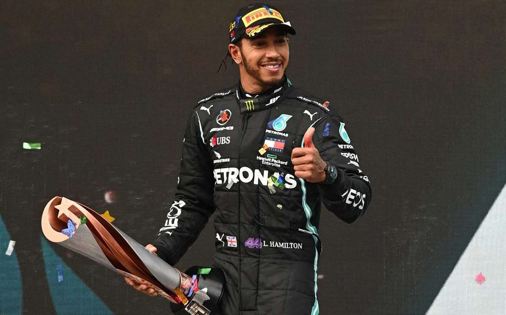

FAN PAGE LEWIS HAMILTON
Hamilton se proclama heptacampeón del mundo con una victoria épica en Turquía.
Lewis Hamilton ya es leyenda a lo grande: heptacampeón del mundo tras una complicadísima carrera en la que supo leer mejor que nadie, a lo campeón, lo que debía hacer.
El podio lo completaron Sergio Pérez, que salvó los muebles para un equipo Racing Point que tuvo en su mano un doblete, y un inesperado Sebastian Vettel, que se puso tercero en la última curva de carrera. Carlos Sainz, 5º, protagonizó la remontada de la carrera: diez posiciones desde el 15º de la parrilla.
En la salida, Max Verstappen se quedó clavado mientras por detrás Hamilton se ponía tercero, aunque una salida de pista le mandó al 6º lugar de nuevo antes de acabar la primera vuelta. Un toque de los dos Renault afectó a Valtteri Bottas, que acabó trompeando y al fondo de la parrilla, mientras por detrás un sorprendente Sebastian Vettel hacía la mejor salida de la temporada y cruzaba la meta por primera vez en tercera plaza.
En estas condiciones, además de un Vettel que ganó 8 posiciones, Carlos Sainz se puso 9º tras recuperar 5. Los Force India, con el inesperado Stroll al frente, se escaparon.
Conforme la pista se empezó a secar, entró en juego la estrategia. La entrada en juego de los neumáticos intermedios y su dubitativo rendimiento hizo que muchos entrasen a boxes, aunque Verstappen y Albon fueron los últimos en hacerlo porque los de agua aún le aguantaban.
La jugada de Red Bull no le salió todo lo bien que esperaba el neerlandés, ya que aunque ganó el tercer puesto a Vettel, no logró hacer lo mismo con Pérez, por lo que el mexicano mantuvo el segundo puesto.
Vettel vs. Hamilton recordando el pasado.
Tras las paradas, se encontraron en pista Sebastian Vettel y Lewis Hamilton, viejos rivales antaño, con Alex Albon de invitado de lujo ante la lucha. El británico empezó a apretar al alemán, que sostuvo con valentía los ataques del virtual campeón (Bottas no pisó la zona de puntos en toda la carrrera), algo que aprovechó el de Red Bull para ganarles la posición a ambos.
El otro Red Bull, Verstappen, se puso a rueda de Pérez para lucharle la segunda posición, y demostró una de sus grandes virtudes (o defectos) y le metió el coche al mexicano en una zona crítica, lo que provocó que hiciese un trompo cuando iba a unos 250 km/h.
El neerlandés perdió no sólo la tercera plaza en favor de su compañero, sino también los neumáticos, por lo que tuvo que entrar en boxes para hacer una parada inesperada. Entre los beneficiados, Sainz, que se puso 7º y con Daniel Ricciardo a tiro. La apertura del DRS en la vuelta 30 abrió la alternativa a cambios de posiciones, conforme la pista se iba secando. Uno de los grandes beneficiados fue Carlos Sainz, que en apenas dos vueltas se puso a rueda de Ricciardo... mientras por detrás Verstappen veía la pelea con el colmillo afilado por si podía aprovecharlo. En cuanto pasó al australiano, que será su sustituto en McLaren en 2021, este entró a boxes para cambiar neumáticos, lo que dejó a Sainz sujetando al 'bicho' Verstappen. Y la pista, secándose.
Hamilton se pone primero y Stroll se hunde
Alex Albon se autodescartó del podio con un trompo, lo que entregó el podio en bandeja a Hamilton. El británico, que ya iba en posición suficiente como para ser campeón, se encontró en tercera posición, en un momento crítico en el que los Racing Point iban perdiendo tiempo con los neumáticos ya muy gastados, y luchando entre sí. Dado que el británico no paró, pero con los neumáticos mejor que Pérez, se puso primero tras pasarle en pista, en un momento crítico: Stroll, que había sido líder toda la carrera, advirtió que se ponía a llover. Sea por eso, o porque sencillamente no le funcionaban esos neumáticos el canadiense se hundió. Mientras Hamilton y Pérez buscaban la victoria sin entrar en boxes, con Verstappen a la espera, el que había sido líder durante toda la carrera fue perdiendo posiciones hasta caer a la octava posición, adelantado incluso por Sainz.
Hamilton se escapa a por la victoria y el título
La recta final de la carrera fue una lección de Hamilton. El ya heptacampeón del mundo se pudo permitir el lujo de aflojar un poco, conforme se escapaba al frente de la carrera y con la duda de que la pista se pusiera para condiciones de ruedas de seco.